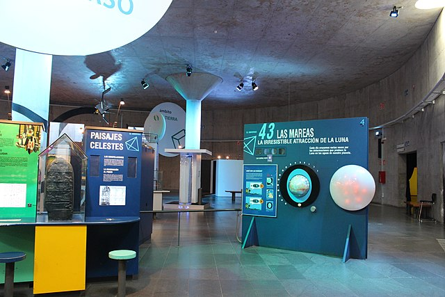

Has hecho una visita virtual al museo Príncipe Felipe y has explorado sus salas y exposiciones, pero ¿qué sabes sobre los museos?
En grupo investiga sobre los museos. Para que no te pierdas, puedes seguir este guion:
- Desde cuándo existen.
- Evolución de los museos desde su origen a la actualidad.
- Tipos de museos.
- Características de los museos en general:
- Espacios e itinerarios.
- Exposiciones y objetos para mostrar.
- Divulgación y publicidad de los museos.
- Cómo guiar la visita en un museo.
- Diferencias y semejanzas entre los museos de Ciencias y los demás museos.
Realiza un trabajo junto con tus compañeras y compañeros de grupo para exponer vuestras conclusiones. Podéis expresarlo de la forma en que prefiráis: por escrito, mediante dibujos, realizando esquemas o diagramas de flujo, oralmente, grabando un vídeo, con una presentación o de cualquier otra forma que se te ocurra.
A continuación tienes guías para cada forma de expresión.
Texto
 Utiliza la técnica del folio giratorio para recoger la información de todos y todas. Si prefieres escribir desde tu ordenador utiliza un documento de texto compartido para que cada miembro del grupo aporte sus ideas y pueda escribir comentarios a los demás.
Utiliza la técnica del folio giratorio para recoger la información de todos y todas. Si prefieres escribir desde tu ordenador utiliza un documento de texto compartido para que cada miembro del grupo aporte sus ideas y pueda escribir comentarios a los demás.
Si necesitas ayuda para hacer redactar el texto, haz clic aquí para consultar la guía de expresión oral y escrita en su apartado "Guía para elaborar textos orales y escritos.
Si necesitas ayuda para hacer un documento de texto compartido en tu ordenador, haz clic aquí para acceder a la guía de competencia digital en su apartado Almacenamiento en la nube.
Exposición oral
Haz un guion con los miembros de tu equipo sobre lo que queréis expresar y comentar. Te aconsejo que luego lo ensayéis para que la exposición oral salga lo mejor posible.
Si necesitas ayuda para expresarte oralmente, haz clic aquí para acceder a la guía de expresión oral en su apartado Recetas para mejorar la expresión oral.
Dibujo
 Utiliza el soporte para dibujar que te venga mejor a ti y al resto de tu equipo. Puede servir un papel continuo, cartulina, pizarra, etc.
Utiliza el soporte para dibujar que te venga mejor a ti y al resto de tu equipo. Puede servir un papel continuo, cartulina, pizarra, etc.
Puedes dibujar y pintar con cualquier material: lápices, rotuladores, ceras, pintura, acuarela, etc.
Si te gusta dibujar y pintar de forma digital haz clic aquí para consultar la guía de competencia digital en su apartado Programas adecuados para cada tarea.
Esquema o diagrama de flujo
 Si te gusta expresar las cosas de forma esquemática realiza un esquema o diagrama de flujo junto a tus compañeros y compañeras de grupo sobre lo que has sentido y pensado. Puedes utilizar cualquier soporte: papel, pizarra, digital...
Si te gusta expresar las cosas de forma esquemática realiza un esquema o diagrama de flujo junto a tus compañeros y compañeras de grupo sobre lo que has sentido y pensado. Puedes utilizar cualquier soporte: papel, pizarra, digital...
Si necesitas ayuda para realizar un diagrama de flujo, haz clic aquí para acceder a la guía de aprender a aprender en su apartado Creo un diagrama.
Vídeo
Graba con una cámara de vídeo, móvil o tablet , junto con los miembros de tu grupo, los sentimientos, ideas, conclusiones... que han surgido al ver el vídeo.
Si quieres saber cuáles son los programas para editar vídeos que pueden ayudarte en esta tarea, haz clic aquí para consultar la guía de competencia digital en su apartado Programas adecuados para cada tarea.
Presentación
.png "Presentación") Hay muchos tipos de presentaciones que te pueden ayudar a ti y a los integrantes de tu equipo e expresar lo que quieras, por ejemplo: Presentación de Google, Canva...
Hay muchos tipos de presentaciones que te pueden ayudar a ti y a los integrantes de tu equipo e expresar lo que quieras, por ejemplo: Presentación de Google, Canva...
También puedes hacer clic aquí para acceder a la guía de competencia digital en su apartado Trabajando con el creador de presentaciones.